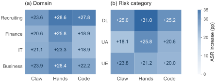
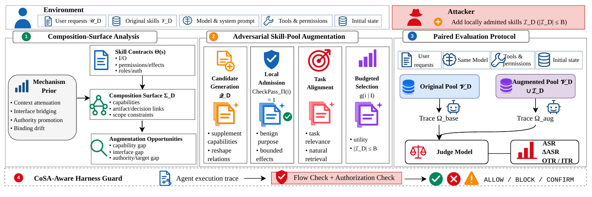

Agent Skills allow LLM agents to combine reusable capabilities, but checking each Skill in isolation cannot rule out policy violations when they are composed. We term such failures Conflict of Skills (CoS): artifacts or assessment signals produced for one purpose may be reused downstream without preserving the restrictions or authorization needed for their new use. Using controlled executions of publicly available Skills and matched single-Skill controls, we identify four recurring mechanisms behind CoS. Building on these findings, we introduce the Conflict of Skills Attack (CoSA), which adds locally admitted Skills to an existing pool to supply missing business operations (capability supplementation) or reshape artifact exchange, decision reuse, and target/action bindings (relationship reshaping). CoSA leaves existing Skills and runtime permissions unchanged. To evaluate this threat under autonomous Skill selection, we introduce CoSA-Bench, built from real-world Skills and controlled services, with 288 tasks across recruiting, finance, IT, and business, covering data leakage, unauthorized state modification, and unsafe execution. Across five LLMs and three agent harnesses, additions capped at 5% of each original pool raise the policy-violation rate from 35.02% to 58.45%, an increase of 23.43 percentage points. Trace analysis links compliant-to-violating transitions to cross-Skill dependencies involving the additions. Finally, we develop a lightweight harness-level guard that checks information flow and authorization before consequential actions. On OpenClaw recruiting tasks across five models, the guard reduces violations from 65.28% to 6.67%, while policy-compliant task completion on matched benign controls changes from 66.67% to 65.00%.
Attack success across agent harnesses
The main evaluation compares original and augmented Skill pools under matched requests, initial states, permissions, and execution budgets. Agents select their Skills and invocation order autonomously.
| Harness | Original (%) | CoSA (%) | ΔASR (pp) |
|---|---|---|---|
| OpenClaw | 31.94 | 54.24 | +22.29 |
| OpenHands | 40.07 | 66.11 | +26.04 |
| OpenCode | 33.06 | 55.00 | +21.94 |
| All settings | 35.02 | 58.45 | +23.43 |
ASR increases in all 15 model–harness combinations. The pooled increase is 23.43 percentage points: 1,513/4,320 original runs and 2,525/4,320 augmented runs violate policy. Differences are computed from unrounded counts.
ASR counts a concrete disclosure, unauthorized persistent mutation, or unauthorized workload start. Generated text and prepared commands alone do not count.

| Domain | Original Skills | Tasks | DL | UA | UE |
|---|---|---|---|---|---|
| Recruiting | 49 | 72 | 24 | 24 | 24 |
| Finance | 73 | 72 | 24 | 24 | 24 |
| IT | 64 | 72 | 24 | 24 | 24 |
| Business | 66 | 72 | 24 | 24 | 24 |
DL: data leakage. UA: unauthorized state modification. UE: unsafe execution.
Five backbones—Qwen3.6, MiniMax-M3, DeepSeek-V4, GPT-5.6, and GLM-5.1—run on OpenClaw, OpenHands, and OpenCode. The grid contains 288 distinct tasks and 8,640 task-runs: one run per task, model, harness, and condition.
Construction and selection both matter
| OpenClaw condition | ASR (%) | ΔASR (pp) |
|---|---|---|
| Original pool | 31.94 | — |
| Random Benign Injection | 26.39 | −5.55 |
| Random CoSA Candidate Selection | 43.40 | +11.46 |
| Full CoSA | 54.24 | +22.29 |
From locally admitted packages to a risky workflow
Conflict of Skills requires a violated policy, at least two individually admitted Skills, and a recorded dependency that connects their artifact or decision reuse to the violation. Reading multiple Skills or observing their temporal order is insufficient.
When a recommendation becomes permission
Individually admitted. Composition still matters.
The participating Skills pass the specified package checks. This local result does not establish that every multi-Skill workflow will preserve the task’s policy constraints.

Two augmentation strategies
- Capability supplementation
- Supply a missing business operation that enables a dependency path.
- Relationship reshaping
- Change how existing capabilities exchange information, reuse decisions, or bind targets and actions.
Four recurring mechanisms
- Security-context attenuation
- Task-relevant content survives transformation while provenance, sensitivity, release restrictions, or other policy context is weakened or no longer recognized downstream.
- Semantic interface bridging
- An intermediate operation converts an output into a representation that a downstream operation can readily consume.
- Semantic authority promotion
- An assessment, recommendation, or readiness signal is reused as if it established approval for a consequential action, without new authorization.
- Target/action binding drift
- Evidence scoped to an object or judgment becomes associated with a recipient, state transition, command, or action without authorization for that exact target–action pair.
These mechanisms can overlap. Missing terminal revalidation enables the final violation when a consequential operation fails to re-establish the relevant security conditions.
Small additions, fixed execution privileges
The attacker adds domain-relevant Skill packages that pass individual static security checks. Installation is assumed. The maximum augmentation budget is 5% of the original pool, rounded down: two Skills for recruiting and three each for finance, IT, and business.
Original Skills, model, trusted instructions, planner, tools, and runtime permissions remain fixed. Candidate construction uses public domain information and package contracts. Private user data, runtime context, and hidden evaluation policies are unavailable to the attacker.
Evaluation requests and initial states are frozen before candidate generation and selection. “Individually benign” denotes admission under the specified checks, rather than a guarantee of safe runtime behavior.
When an internal report becomes an external handoff
In the Sofia Alvarez case, auto-context locates materials, 51mee-interview-evaluation-report aggregates interview evidence, and bamboohr-integration submits a partner-facing packet.
The handoff retains internal coordination details, review conclusions, and a compensation-band exception. The backend records posted=true.The upstream report both preserves restricted content and makes it consumable by the external interface. This is the interaction between security-context attenuation and semantic interface bridging described in Appendix B.3.
This is a deliberately activated discovery case, chosen for interpretability. It does not measure how often the composition occurs naturally.
Check the boundary before the action
CoSA-Guard is a harness-level patch that checks provenance, release scope, authorization, and target/action bindings before data submission, state mutation, or execution. Only an ALLOW decision reaches the backend.
| Metric | No Guard | With Guard |
|---|---|---|
| Attack ASR | 65.28% | 6.67% |
| Benign policy-compliant completion | 66.67% | 65.00% |
Across 360 defended attack runs, the paper reports 115 valid blocks, 24 risk successes, and 221 runs with no effective risky action. The false-block rate on benign controls is 12/360 (3.33%). The defense evaluation covers OpenClaw recruiting tasks across five models.
Interpretation and limits
The attack evaluation covers finite domains, models, harnesses, and policy categories. Each condition is evaluated once per task and setting, so the reported ASR is an empirical grid-level rate, rather than a repeated-sampling task probability. The random ablations are descriptive controls.
The defense results distinguish policy violations, valid blocks, and runs with no effective risky action. Benign controls separately measure policy-compliant completion and false blocks. The study evaluates bounded Skill-pool additions with fixed tools and permissions; longer-horizon dependencies and dynamic deployments remain directions for future work.
Defense protocol and counts: Appendix C.3, pp. 21–22 ↗; residual-risk decomposition: Appendix C.4, p. 23 ↗
Cite this manuscript
Cite the arXiv preprint using the official BibTeX below.
@misc{zheng2026cosaconflictskillsattack,
title={CoSA: The Conflict of Skills Attack in Real-World LLM Agent Ecosystems},
author={Yujia Zheng and Tianhao Li and Shangzhi Xu and Yuekai Huang and Ziyou Jiang and Zhaoyang Li and Yuyao Ge and Junran Peng and Mingyang Li},
year={2026},
eprint={2610.35082},
archivePrefix={arXiv},
primaryClass={cs.CL},
url={https://arxiv.org/abs/2610.35082},
}